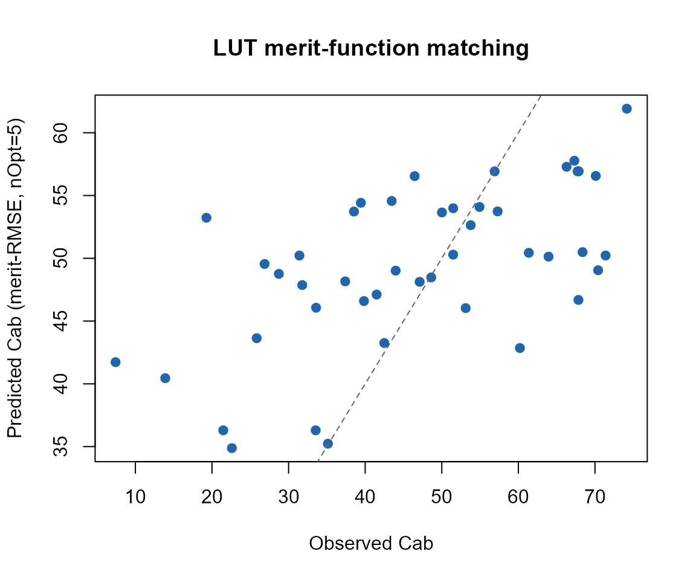

10. From Physics to Vegetation Traits: Hybrid Inversion
10-hybrid-inversion.Rmd
library(ToolsRTM)Every tutorial so far ran the forward model: traits in, spectrum out.
Inversion goes the other way – given ONLY the
sensor-band reflectance a satellite or field spectrometer would measure,
retrieve a biophysical trait (chlorophyll content, Cab,
throughout this page) without knowing the ground truth. This is the
hybrid approach: instead of solving the radiative
transfer equations analytically (rarely possible) or field- calibrating
an empirical index-to-trait relationship (needs field data per
site/crop), simulate a LUT with the physics you already have, and learn
the reflectance-to-trait relationship from the simulation itself.
Parameter LUT
|
v
RTM simulations (Tutorials 01-06)
|
v
Sensor convolution (Tutorial 07)
|
v
Synthetic training dataset (reflectance, trait) pairs
|
v
Inversion method
|
v
Vegetation traitsThree inversion methods share this exact framework, differing only in the last step:
-
get.inversionOpt()(this page): no model is fit at all. It ranks every spectrum in a reference LUT by how closely it matches an observed spectrum under a chosen merit function, then averages the trait values of the closest matches. Pure library search. -
get.inversion()(Tutorial 11): fits a statistical/ML model (Random Forest, PLSR, SVM, … 12 algorithms viacaret) on a training LUT, then predicts on new spectra. -
getMLmodel()(Tutorial 12): fits a deep-learning model on the same kind of data.
1. Simulate a LUT and convolve to Sentinel-2A
n_samples <- 150
LUT <- as.data.frame(getLUT(inputs = ToolsRTM::inputsPROSAIL, nLUT = n_samples, setseed = 1))
wl <- 400:2500
rsoil <- rep(0.15, length(wl))
refl <- t(sapply(seq_len(n_samples), function(i) {
foursail(inputLUT = LUT[i, ], rsoil = rsoil, LeafModel = "PROSPECT-PRO")$rsot
}))
refl_X <- as.data.frame(refl); colnames(refl_X) <- paste0("X", wl); refl_X <- cbind(id = seq_len(nrow(refl_X)), refl_X)
se2a <- suppressMessages(get.spectra.convolved(rfl = refl_X, sensor = "Sentinel2a", plot.spectra = FALSE))
#> [1] "Spectral resampling function to SENTINEL2A is being processed ..."
#> | | | 0% | |===== | 8% | |=========== | 15% | |================ | 23% | |====================== | 31% | |=========================== | 38% | |================================ | 46% | |====================================== | 54% | |=========================================== | 62% | |================================================ | 69% | |====================================================== | 77% | |=========================================================== | 85% | |================================================================= | 92% | |======================================================================| 100%
wl_bands <- as.numeric(names(se2a)[-1])
band_names <- paste0("B", seq_along(wl_bands))
names(se2a) <- c("id", band_names)150 simulated spectra, convolved to Sentinel-2A’s 13 real bands – this is what every inversion method below actually sees, not the native 1nm spectrum.
2. A train/test split, shared by every method
set.seed(1)
train_idx <- sample(seq_len(n_samples), size = round(0.7 * n_samples))
test_idx <- setdiff(seq_len(n_samples), train_idx)
LUT_train <- LUT[train_idx, ]; LUT_test <- LUT[test_idx, ]
se2a_mat <- as.matrix(se2a[, band_names])
se2a_train_mat <- se2a_mat[train_idx, ]; se2a_test_mat <- se2a_mat[test_idx, ]
r2_f <- function(obs, pred) 1 - sum((obs - pred)^2) / sum((obs - mean(obs))^2)
rmse_f <- function(obs, pred) sqrt(mean((obs - pred)^2))
cat("Train:", length(train_idx), "spectra. Test (held out):", length(test_idx), "spectra.\n")
#> Train: 105 spectra. Test (held out): 45 spectra.3. get.inversionOpt(): LUT merit-function matching
method picks how “closeness” between two spectra is
measured. nOpt controls how many of the closest training
spectra get averaged together for the final trait estimate:
opt_rmse <- get.inversionOpt(rfl.sensor = se2a_test_mat, rfl.rtm = se2a_train_mat,
LUT = LUT_train, wave = wl_bands, method = "merit-RMSE", nOpt = 5)
opt_fge <- get.inversionOpt(rfl.sensor = se2a_test_mat, rfl.rtm = se2a_train_mat,
LUT = LUT_train, wave = wl_bands, method = "merit-FGE", nOpt = 5)
opt_dwt <- get.inversionOpt(rfl.sensor = se2a_test_mat, rfl.rtm = se2a_train_mat,
LUT = LUT_train, wave = wl_bands, method = "merit-DWT", nOpt = 5)Each call returns a 2-element list: [[1]]
(rfl.b) is the matched reflectance itself,
[[2]] (LUT.best) is the corresponding trait
table:
opt_metrics <- data.frame(
method = c("merit-RMSE", "merit-FGE", "merit-DWT"),
R2 = c(r2_f(LUT_test$Cab, opt_rmse[[2]]$Cab), r2_f(LUT_test$Cab, opt_fge[[2]]$Cab), r2_f(LUT_test$Cab, opt_dwt[[2]]$Cab)),
RMSE = c(rmse_f(LUT_test$Cab, opt_rmse[[2]]$Cab), rmse_f(LUT_test$Cab, opt_fge[[2]]$Cab), rmse_f(LUT_test$Cab, opt_dwt[[2]]$Cab))
)
knitr::kable(opt_metrics, digits = 3)| method | R2 | RMSE |
|---|---|---|
| merit-RMSE | 0.287 | 14.472 |
| merit-FGE | 0.590 | 10.977 |
| merit-DWT | 0.251 | 14.832 |
merit-RMSE/merit-FGE compare raw band
reflectance; merit-DWT compares each spectrum’s discrete
wavelet transform coefficients instead (sensitive to overall spectral
shape rather than each band’s exact value). merit-NRMSE,
merit-MAE, merit-NMB, and
merit-1stD (first-derivative matching) are the remaining
built-in options; custom_stat accepts your own
function(sim, obs).
plot(LUT_test$Cab, opt_rmse[[2]]$Cab, pch = 19, col = "#2166AC",
xlab = "Observed Cab", ylab = "Predicted Cab (merit-RMSE, nOpt=5)",
main = "LUT merit-function matching")
abline(0, 1, col = "grey40", lty = 2)
Why this method, and when
get.inversionOpt() needs no training step and works from
a handful of reference spectra – a quick, physically-grounded retrieval
with no ML infrastructure. Its limitation: accuracy is capped by how
well the LUT covers the true trait space, and it re-searches the whole
reference LUT for every new observation (no learned model to reuse).
Tutorials 11-12 build actual models instead, trading that simplicity for
better accuracy at scale.
What’s next
-
Tutorial 11 –
get.inversion(): 12 ML algorithms, compared on this same LUT. -
Tutorial 12 –
getMLmodel(): deep learning on the same data. - Tutorial 13 – the full pipeline end-to-end, LUT to trait maps.